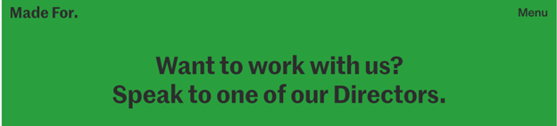
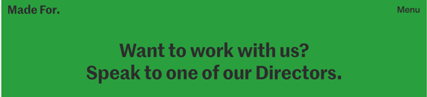

Color Theory Article
Colors allow us to see the world and pick up on the beauty that is around us. It is said that the role of colors influences our learning, well being, and our daily choices. In this article color is explored via websites. The two websites were found through Siteinspire and are Office for Architecture, Interior and Objects (AIO) and Made For. Both web pages are architecture and design companies with a neutral color scheme.
The web page for AIO displays a monochromatic neutral beige scheme all throughout the website. This theme, along with the photos of the company's works, allows the focus of the visitor to fall on the main content. The contrast from the neutral background and the colors of the typography used allows the wording to stand out in a subtle yet effective manner.

Source: Office for Architecture, Interior and Objects (AIO)
Whereas the monochromatic neutral color scheme is present on the Made For web page, however, it is not present all throughout the website. When a user clicks on the company's Menu the color is blue and then if user clicks on Contacts, it is green. These pops of colors can be a nice touch, but I do not think that they are consistent with the neutral color palette. These colors can balance the web page if they are incorporated throughout the web pages.
 

Source: Made For.